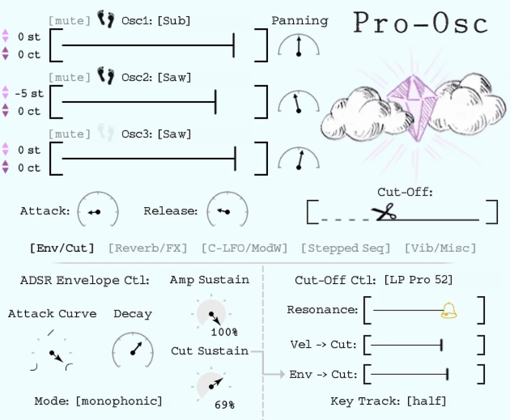
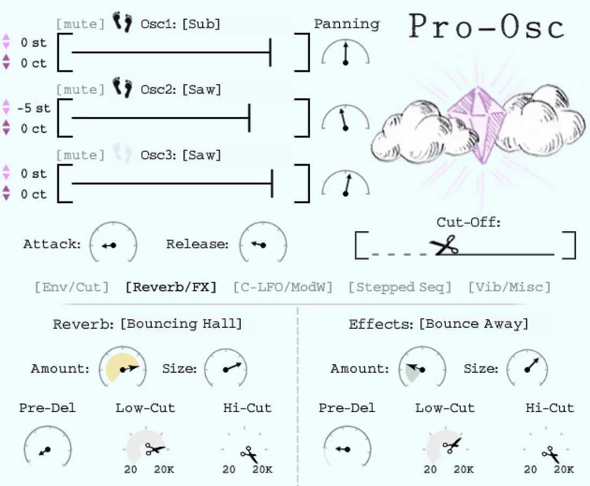
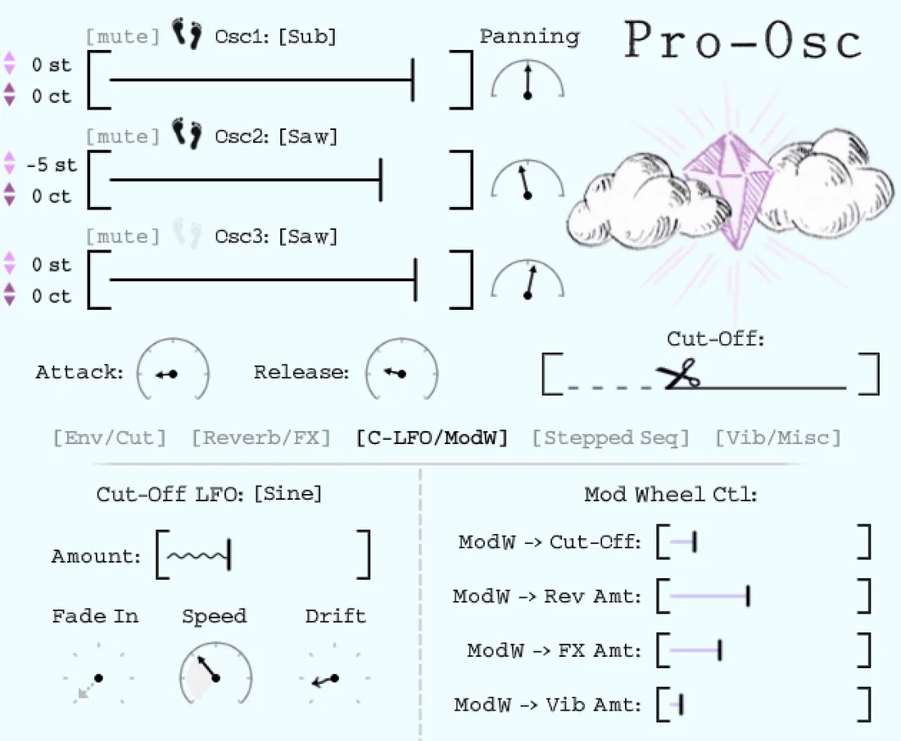
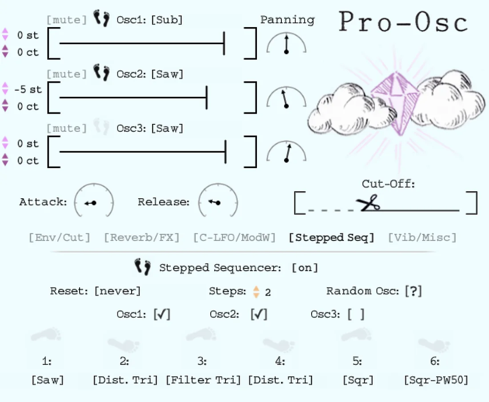
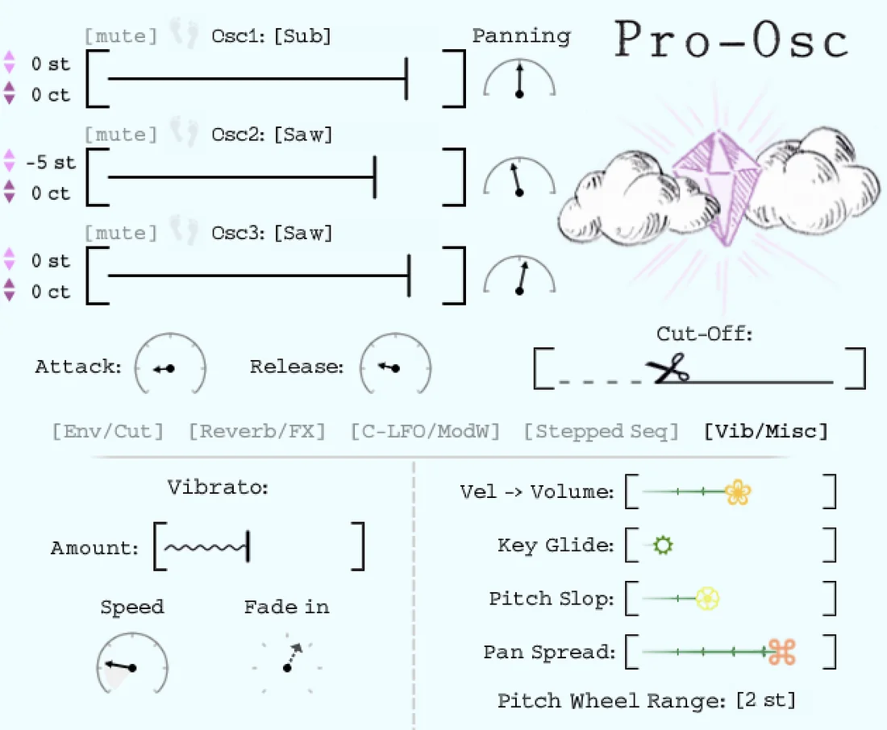

The Osc Collection · Analog
Pro‑Osc
A vintage-era analog synth, sampled into a modern instrument.
Built from the raw oscillators of a Curtis-filtered vintage analog synth — then wrapped in a hand-drawn interface. Cinematic warmth that fills the room, and 83 handcrafted presets with no filler, all performable from the mod wheel.
Or get all five in the Osc Collection — $99 · new here? try DEM-Osc free
- Runs in the free Kontakt Player
- macOS & Windows
- 83 presets, no filler





Hear it
Real sounds,
straight from Pro‑Osc.
Four presets and a full track — every sound below was made with Pro-Osc alone.
Tap a sound. It streams, nothing to download.
The thing reviewers say
It looks playful. Then you hear it.
Every knob is drawn by hand, and the sound underneath is a real vintage analog synth, sampled shape by shape, run through real spaces.
“The sound here is serious… I really like it.”
What’s under the hood
Familiar sounds.
Refreshing interface.
- 14
Wave shapes, three at a time
Three oscillator selectors, each with 14 sampled shapes from a Curtis-filtered vintage analog synth — plus per-oscillator pitch and pan.
- 30
Convolution spaces built in
Cross-synthesis through our favorite outboard reverbs and eurorack effects — 15 reverbs and 15 FX, ready to convolve your sound.
- ↻
A stepped sequencer with a twist
It only steps when a note arrives — swapping the loaded wave shape per note to bring melodies and chords to life.
- ∿
Cut-Off LFO & a mod-wheel command center
A dedicated filter LFO with plenty of shapes, plus a control center that maps many parameters to your mod wheel at once.
- ≈
Vibrato, glide, slop & spread
Classic vibrato with speed and fade-in, plus polyphonic glide, pitch slop and pan spread to keep everything alive and human.
See it move
Watch Pro‑Osc in action.
Prefer a walkthrough? Watch the Pro-Osc tutorial →
The details
Everything in the box.
Key features
- 83 handcrafted presets, no filler
- 14 wave shapes from a Curtis-filtered vintage analog synth
- 30 custom impulse responses (15 reverbs + 15 eurorack FX)
- Note-triggered stepped sequencer
- Cut-Off LFO, Vibrato, Pitch Slop & polyphonic Glide
- Full NKS support — Maschine & Komplete Kontrol
Requirements
- Install & download through Native Access
- Runs in the free Kontakt 6+ Player, full Kontakt 6 & 7, Komplete Kontrol or Maschine 2
- macOS & Windows
From the studio
Loved by producers.
- ★★★★★
“From the first chord struck I was speechless — finally soft-synths with soul, and they sound stellar.”
- ★★★★★
“Pro-Osc is packed full of analogue goodness — a lush, warm sound with a uniqueness reminiscent of when synths ruled the airwaves.”
- ★★★★★
“True analog sounds. The graphics and design are top, and the presets are a great start point for sonic exploration. A work of love for sure.”
Who made it
Pro-Osc is made by Clay and Kelsy Instruments — our cute little software company. We build the instruments and the tools we need to keep producing music. Our music has been streamed over 2 million times, and our instruments downloaded over 10,000 times.
Make it yours
Get Pro‑Osc.
Or get all five — the Osc Collection for $99 (save $45). New here? DEM-Osc is free.
Do I need to own Kontakt?
No — Pro-Osc runs in the free Kontakt Player (Kontakt 6 or higher). Install it through Native Access.
What operating systems are supported?
macOS and Windows, with full NKS support for Maschine and Komplete Kontrol.
What’s inside?
Three oscillators with 14 wave shapes each from a Curtis-filtered vintage analog synth, 30 convolution spaces, a note-triggered stepped sequencer, a mod-wheel command center, and 83 handcrafted presets.